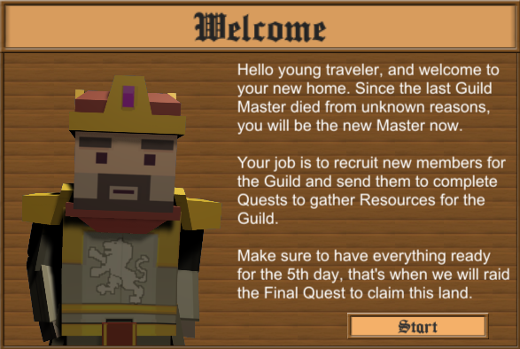
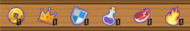

Guild Master
Guild Master is a strategy fantasy game where the player takes control of a collective of heroes who are part of a brotherhood and has to manage them to beat the final dungeon.
The player needs to recruit members for the guild, whom will be able to produce different type of resources. These resources will be used as provisions to send the members to the Dungeon, on different kind of quests. From this dungeon quests the players obtains new rewards to upgrade the town and progress even deeper in the dungeon.

My Contribution
AI Archetypes
Implemented a Behaviour Tree for the AI of each agent, which is divided into 3 main sections, Resting, Working and Questing. When resting an agent regenerates stamina and chooses to do a random activity from a pool(shop, fish, go to the tavern, take a stroll). Also during night time they can go to sleep.
Also, each agent has a specific behaviour while working depending on it's class. Knights train and fight in the arena, Mages create healing potions and Hunters go to the woods and hunt for meat.

Quest System
Implemented quest system, which generates a set amount of quests every day, of increasing difficuly. A quest contains enemies and rewards, which are generated according to the quest, and resources can be spent in a quest to increase it's success chance.
Implemented three enemy types, Skeleton, Bandit and Orc, each one of them is countered by a specific hero type, increasing the success chance of the quest. There's four different types of party sizes for a quest, One Man, Three Man, Five Man and Ten Man. Also, each quest has a type, Adventure or Bounty, which favors a specific resource to increase success chance.
Town Management
Implemented the ability to recruit new heroes and upgrade them. Also created the improvement of the buildings, the rewards they give to the player and their scaling.
Implemented the ability for the player to make a hero work or rest, send them to a quest and follow a hero through the town.

Resources
Implemented each type of resource in the game, how to obtain them, how to spend them and their effects on quest
- Potion: allow a member to heal 50% stamina when it’s stamina drops below 25%.
- Meat: greatly increases the success chance of Adventure Quests.
- Flame: greatly increase the success chance of Bounty Quests.
- Gold: used to upgrade Buildings and level up Members.
- Shield: Shields are used to upgrade the Blacksmith.
- Crown: Crowns are used to upgrade the Guild Hall.
